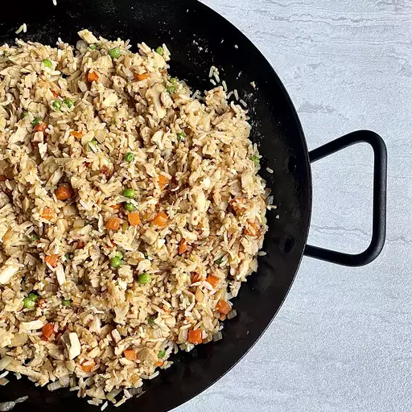

Leftover Turkey Fried Rice

This turkey fried rice is a quick and easy recipe for leftover turkey. It conquers that need for something different after a day of roasted turkey and the fixin's!
Ingredients
nonstick cooking spray
1 medium onion, diced
1/2 cup forzen peas and carrots
2 tablespoons salted butter
3 cups cold cooked rice
2 cups diced cooked turkey
2 tablespoons soy sauce, or more to taste
1 tablespoon sesame oil, or as needed
2 large eggs
Steps
- Coat a large pan with cooking spray. Add onion and sauté over medium heat until translucent, about 5 minutes. Add frozen vegetables and butter; cook and stir, allowing butter to melt and veggies to thaw, 3 to 5 minutes.
- Increase heat to medium-high and stir in rice and turkey. Add soy sauce, 2 tablespoons at a time, and stir until rice takes on color. Push everything to the sides of the pan. Add sesame oil to the center of the pan and stir rice mixture until coated. Push everything to the sides of the pan again. Break eggs in the center of the pan. Scramble in the center until set, 2 to 3 minutes; then stir into rice mixture until well combined.